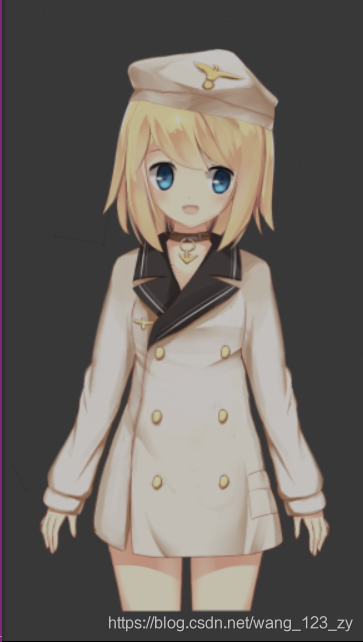

文章目录
- 添加和注意事项
- 模型预览
- live2d-widget-model-chitose
- live2d-widget-model-epsilon2_1
- live2d-widget-model-gf
- live2d-widget-model-haru_01
- live2d-widget-model-haru_02
- live2d-widget-model-haruto
- live2d-widget-model-hibiki
- live2d-widget-model-hijiki
- live2d-widget-model-izumi
- live2d-widget-model-koharu
- live2d-widget-model-miku
- live2d-widget-model-nico
- live2d-widget-model-nietzsche
- live2d-widget-model-ni-j
- live2d-widget-model-nipsilon
- live2d-widget-model-nito
- live2d-widget-model-shizuku
- live2d-widget-model-tororo
- live2d-widget-model-tsumiki
- live2d-widget-model-unitychan
- live2d-widget-model-wanko
- live2d-widget-model-z16
添加和注意事项
关于如何添加，可以看这里：https://www.jianshu.com/p/3a6342e16e57
模型的GitHub地址：https://github.com/xiazeyu/live2d-widget-models
需要注意：
- live2d-widget-model-haru模型需要安装
npm install live2d-widget-model-haru - 在使用的时候，live2d-widget-model-haru有两个模型，所以在使用的时候，是这样的：
use: live2d-widget-model-haru/01 或者
use: live2d-widget-model-haru/02 - 01和02的json文件是空的，所以需要把live2d-widget-model-haru文件夹下的json文件复制进去
模型预览
以下模型均是在width: 150 、height: 300下截得
live2d-widget-model-chitose
live2d-widget-model-epsilon2_1
live2d-widget-model-gf
live2d-widget-model-haru_01
live2d-widget-model-haru_02
live2d-widget-model-haruto
live2d-widget-model-hibiki
live2d-widget-model-hijiki
live2d-widget-model-izumi
live2d-widget-model-koharu
live2d-widget-model-miku
live2d-widget-model-nico
live2d-widget-model-nietzsche
live2d-widget-model-ni-j
live2d-widget-model-nipsilon
live2d-widget-model-nito
live2d-widget-model-shizuku
live2d-widget-model-tororo
live2d-widget-model-tsumiki

live2d-widget-model-unitychan
live2d-widget-model-wanko
live2d-widget-model-z16



![]()


 403
403